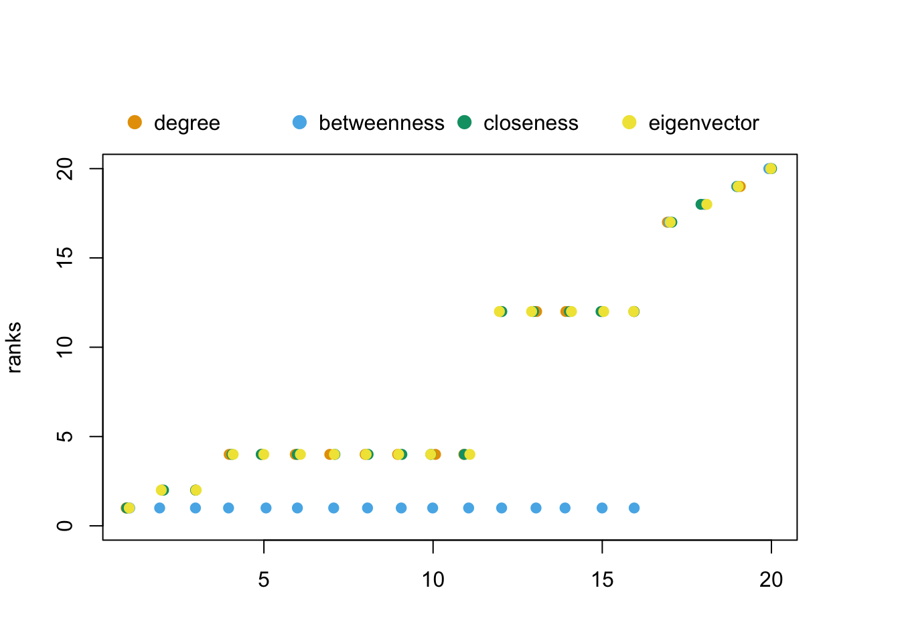

library(igraph)
library(netrankr)6 Advanced Centrality Concepts
6.1 Introduction
When looking at the vast amount of centrality indices, it may be reasonable to ask if there is any natural limit for what can be considered a centrality index. Concretely, are there any theoretical properties that an index has to have in order to be called a centrality index? There exist several axiomatic systems for centrality, which define some desirable properties that a proper index should have. While these systems are able to shed some light on specific groups of indices, they are in most cases not comprehensive. That is, it is often possible to construct counterexamples for most indices such that they do not fulfill the properties. Instead of the rather normative axiomatic approach, we explore a more descriptive approach. We will address the following questions:
- Are there any properties that are shared by all (or almost all) indices?
- If so, can they be exploited for a different kind of centrality analysis?
6.2 Neighborhood-inclusion
Let us start by looking at the following two small examples.
g1 <- readRDS("data/example_1.rds")
g2 <- readRDS("data/example_2.rds")[PLOT]
[APPLY INDICES]
It turns out that there actually is a very intuitive structural property that underlies many centrality indices. If a node has exactly the same neighbors as another and potentially some more, it will never be less central, independent of the choice of index. This property is called neighborhood-inclusion.
An illustration is given below.
We can calculate all pairs of neighborhood-inclusion with the function neighborhood_inclusion() in the netrankr package.
P1 <- neighborhood_inclusion(g1)This graph was created by an old(er) igraph version.
Call upgrade_graph() on it to use with the current igraph version
For now we convert it on the fly...P2 <- neighborhood_inclusion(g2)This graph was created by an old(er) igraph version.
Call upgrade_graph() on it to use with the current igraph version
For now we convert it on the fly...An entry P[i,j] is one if the neighborhood of i is included in the neighborhood of j and zero otherwise. With the function comparable_pairs(), we can check the fraction of comparable pairs. Let us start with the first network.
comparable_pairs(P1)[1] 0.163636Only 16% of pairs are comparable with neighborhood-inclusion. For a better understanding of the dominance relations, we can also visualize them as a graph.
d1 <- dominance_graph(P1)
An edge (i,j) is present, if P[i,j]=1. Centrality indices will always put these comparable pairs in the same order.
[ADD EXAMPLE WITH INDEX PRESERVATION]
Moving on to the second network.
comparable_pairs(P2)[1] 1So all pairs are comparable by neighborhood-inclusion. Hence, all indices will induce the same ranking (up to some potential tied ranks, but no discordant pairs), as we already observed in the previous post.
6.3 Threshold graphs and correlation among indices
The second example network is part of the class of threshold graphs. One of their defining features is that the partial ranking induced by neighborhood-inclusion is in fact a ranking. A random threshold graph can be created with the threshold_graph() function. The function takes two parameters, one for the number of nodes, and one (approximately) for the density. The class includes some well known graphs, such as the two below.
tg1 <- threshold_graph(n = 10, p = 1)
tg2 <- threshold_graph(n = 10, p = 0)We know from the previous section that centrality indices will always produce the same ranking on these graphs. This allows us to reason about another topic that is frequently investigated: correlations among indices. Correlations are often attributed to the definitions of indices. Take closeness and betweenness. On first glance, they measure very different things: Being close to all nodes and being “in between” all nodes. Hence, we would expect them to be only weakly correlated. But threshold graphs give us a reason to believe, that correlations are not entirely dependent on the definitions but rather on structural features of the network. (This article gives more details and references on that topic. Let me know if you can’t access it).
As an illustration, we compare betweenness and closeness on a threshold graph and a threshold graph with added noise from a random graph.
#threshold graph
tg3 <- threshold_graph(100,0.2)
#noise graph
gnp <- sample_gnp(100,0.01)
A1 <- as_adjacency_matrix(tg3, sparse = FALSE)
A2 <- as_adjacency_matrix(gnp, sparse = FALSE)
#construct a noise threshold graph
tg3_noise <- graph_from_adjacency_matrix(xor(A1,A2),mode = "undirected")
#calculate discordant pairs for betweenness and closeness in both networks
disc1 <- compare_ranks(betweenness(tg3),closeness(tg3))$discordant
disc2 <- compare_ranks(betweenness(tg3_noise),closeness(tg3_noise))$discordant
c(disc1,disc2)[1] 0 465On the threshold graph we do not observe any discordant pairs for the two indices. However, the little noise we added to the threshold graph was enough to introduce 465 pairs of nodes that are now ranked differently. In general, we can say that
The closer a network is to be a threshold graph, the higher we expect the correlation of any pair of centrality indices to be, independent of their definition.
But how to define being close to a threshold graph? One obvious choice is to use the function comparable_pairs(). The more pairs are comparable, the less possibilities for indices to rank the nodes differently. Hence, we are close to a unique ranking obtained for threshold graphs. A second option is to use an appropriate distance measure for graphs. netrankr implements the so called majorization gap which operates on the degree sequences of graphs. In its essence, it returns the number of edges that need to be rewired, in order to turn an arbitrary graph into a threshold graph.
mg1 <- majorization_gap(tg3)
mg2 <- majorization_gap(tg3_noise)
c(mg1,mg2)[1] 0.0000000 0.0291829The result is given as a fraction of the total number of edges. So 12% of edges need to be rewired in the noisy graph to turn it into a threshold graph. To get the raw count, set norm=FALSE.
majorization_gap(tg3_noise,norm = FALSE)[1] 306.4 Partial Centrality
The function rank_intervals() is used to calculate the maximal and minimal possible rank for each node in any ranking that is in accordance with a given partial ranking.
data("dbces11")
#neighborhood inclusion
P <- neighborhood_inclusion(dbces11, sparse = FALSE)
rank_intervals(P) node:A rank interval: [1, 6]
node:B rank interval: [1, 9]
node:C rank interval: [2, 9]
node:D rank interval: [2, 11]
node:E rank interval: [3, 11]
node:F rank interval: [2, 11]
node:G rank interval: [2, 11]
node:H rank interval: [2, 11]
node:I rank interval: [1, 11]
node:J rank interval: [1, 11]
node:K rank interval: [3, 11]The package uses the convention, that higher numerical ranks correspond to top ranked position. The lowest possible rank is thus 1. The column mid_point should not be confused with the expected rank of nodes, which is calculated with the function exact_rank_prob().
Rank intervals are useful to assess the ambiguity of ranking nodes. The bigger the intervals are, the more freedom exists, e.g. for centrality indices, to rank nodes differently.
The intervals can be visualized with its own plot() function. The function can take a data frame of centrality scores as an additional parameter cent_scores. The ranks of each node for each index are then plotted within each interval. Again, the higher the numerical rank the higher ranked the node is according to the index.
cent_scores <- data.frame(
degree=degree(dbces11),
betweenness=round(betweenness(dbces11),4),
closeness=round(closeness(dbces11),4),
eigenvector=round(eigen_centrality(dbces11)$vector,4))
rk_int <- rank_intervals(P)
plot(rk_int,cent_scores = cent_scores)
A small jitter effect is added to the points to reduce over-plotting.
Note that you may encounter situations, where ranks of centralities may fall outside of interval. This can happen in cases of ties in rankings, especially for betweenness centrality. Betweenness is, so far, the only index that does not strictly preserve neighborhood-inclusion. That is, while \[
N(u)\subseteq N[v] \text{ and } N(v)\not\subseteq N[u] \implies c(u)<c(v)
\] holds for most indices, betweenness fails to fulfill this property.
The intervals reduce to single points for threshold graphs, since all nodes are pairwise comparable by neighborhood-inclusion.
set.seed(123)
tg <- threshold_graph(20,0.2)
#neighborhood inclusion
P <- tg %>% neighborhood_inclusion(sparse = FALSE)
#without %>% operator:
# P <- neighborhood_inclusion(tg,sparse = FALSE)
plot(rank_intervals(P))The described betweenness inconsistancy is most evident for threshold graphs as shown in the rank intervals below.
cent_scores <- data.frame(
degree=degree(tg),
betweenness=round(betweenness(tg),4),
closeness=round(closeness(tg),4),
eigenvector=round(eigen_centrality(tg)$vector,4))
plot(rank_intervals(P),cent_scores = cent_scores)
6.5 Exact Probabilities
Before calculating any probabilities consider the following example graph and the rankings induced by various centrality indices, shown as rank intervals.
[MORE TEXT]
But first, let us briefly look at all the return values.
res <- exact_rank_prob(P)Warning in exact_rank_prob(P): P is already a ranking.
Expected Ranks correspond to the only possible ranking.resNumber of possible centrality rankings: 1
Equivalence Classes (max. possible): 8 (20)
- - - - - - - - - -
Rank Probabilities (rows:nodes/cols:ranks)
1 2 3 4 5 6 7 8 9 10 11 12 13 14 15 16 17 18 19 20
V1 0 0 0 0 0 0 0 0 0 0 0 0 0 0 0 1 0 0 0 0
V2 0 0 0 0 0 0 0 0 0 0 0 0 0 0 0 1 0 0 0 0
V3 0 0 0 0 0 0 0 0 0 0 0 0 0 0 0 1 0 0 0 0
V4 0 0 0 0 0 0 0 0 0 0 0 0 0 0 0 1 0 0 0 0
V5 0 0 0 0 0 0 0 0 0 0 0 0 0 0 0 1 0 0 0 0
V6 0 0 0 0 0 0 0 0 0 0 0 0 0 0 0 0 1 0 0 0
V7 0 0 0 0 0 0 0 0 0 0 1 0 0 0 0 0 0 0 0 0
V8 0 0 0 0 0 0 0 0 0 0 1 0 0 0 0 0 0 0 0 0
V9 0 0 0 0 0 0 0 0 0 0 1 0 0 0 0 0 0 0 0 0
V10 0 0 0 0 0 0 0 0 0 0 1 0 0 0 0 0 0 0 0 0
V11 0 0 0 0 0 0 0 0 0 0 1 0 0 0 0 0 0 0 0 0
V12 0 0 0 0 0 0 0 0 0 0 1 0 0 0 0 0 0 0 0 0
V13 0 0 0 0 0 0 0 0 0 0 1 0 0 0 0 0 0 0 0 0
V14 0 0 0 0 0 0 0 0 0 0 1 0 0 0 0 0 0 0 0 0
V15 0 0 0 0 0 0 0 0 0 0 0 0 0 0 0 0 0 1 0 0
V16 0 0 1 0 0 0 0 0 0 0 0 0 0 0 0 0 0 0 0 0
V17 0 0 1 0 0 0 0 0 0 0 0 0 0 0 0 0 0 0 0 0
V18 0 0 0 0 0 0 0 0 0 0 0 0 0 0 0 0 0 0 1 0
V19 1 0 0 0 0 0 0 0 0 0 0 0 0 0 0 0 0 0 0 0
V20 0 0 0 0 0 0 0 0 0 0 0 0 0 0 0 0 0 0 0 1
- - - - - - - - - -
Relative Rank Probabilities (row ranked lower than col)
V1 V2 V3 V4 V5 V6 V7 V8 V9 V10 V11 V12 V13 V14 V15 V16 V17 V18 V19 V20
V1 0 0 0 0 0 1 0 0 0 0 0 0 0 0 1 0 0 1 0 1
V2 0 0 0 0 0 1 0 0 0 0 0 0 0 0 1 0 0 1 0 1
V3 0 0 0 0 0 1 0 0 0 0 0 0 0 0 1 0 0 1 0 1
V4 0 0 0 0 0 1 0 0 0 0 0 0 0 0 1 0 0 1 0 1
V5 0 0 0 0 0 1 0 0 0 0 0 0 0 0 1 0 0 1 0 1
V6 0 0 0 0 0 0 0 0 0 0 0 0 0 0 1 0 0 1 0 1
V7 1 1 1 1 1 1 0 0 0 0 0 0 0 0 1 0 0 1 0 1
V8 1 1 1 1 1 1 0 0 0 0 0 0 0 0 1 0 0 1 0 1
V9 1 1 1 1 1 1 0 0 0 0 0 0 0 0 1 0 0 1 0 1
V10 1 1 1 1 1 1 0 0 0 0 0 0 0 0 1 0 0 1 0 1
V11 1 1 1 1 1 1 0 0 0 0 0 0 0 0 1 0 0 1 0 1
V12 1 1 1 1 1 1 0 0 0 0 0 0 0 0 1 0 0 1 0 1
V13 1 1 1 1 1 1 0 0 0 0 0 0 0 0 1 0 0 1 0 1
V14 1 1 1 1 1 1 0 0 0 0 0 0 0 0 1 0 0 1 0 1
V15 0 0 0 0 0 0 0 0 0 0 0 0 0 0 0 0 0 1 0 1
V16 1 1 1 1 1 1 1 1 1 1 1 1 1 1 1 0 0 1 0 1
V17 1 1 1 1 1 1 1 1 1 1 1 1 1 1 1 0 0 1 0 1
V18 0 0 0 0 0 0 0 0 0 0 0 0 0 0 0 0 0 0 0 1
V19 1 1 1 1 1 1 1 1 1 1 1 1 1 1 1 1 1 1 0 1
V20 0 0 0 0 0 0 0 0 0 0 0 0 0 0 0 0 0 0 0 0
- - - - - - - - - -
Expected Ranks (higher values are better)
V1 V2 V3 V4 V5 V6 V7 V8 V9 V10 V11 V12 V13 V14 V15 V16 V17 V18 V19 V20
16 16 16 16 16 17 11 11 11 11 11 11 11 11 18 3 3 19 1 20
- - - - - - - - - -
SD of Rank Probabilities
V1 V2 V3 V4 V5 V6 V7 V8 V9 V10 V11 V12 V13 V14 V15 V16 V17 V18 V19 V20
0 0 0 0 0 0 0 0 0 0 0 0 0 0 0 0 0 0 0 0
- - - - - - - - - - The function returns an object of type which contains the result of a full probabilistic rank analysis. The specific list entries are discussed in the following subsections.
6.5.1 Rank Probabilities
Instead of insisting on fixed ranks of nodes as given by indices, we can use rank probabilities to assess the likelihood of certain rank. Formally, rank probabilities are simply defined as \[
P(rk(u)=k)=\frac{\lvert \{rk \in \mathcal{R}(\leq) \; : \; rk(u)=k\} \rvert}{\lvert \mathcal{R}(\leq) \rvert}.
\] Rank probabilities are given by the return value rank.prob of the exact_rank_prob() function.
rp <- round(res$rank.prob,2)
rp 1 2 3 4 5 6 7 8 9 10 11 12 13 14 15 16 17 18 19 20
V1 0 0 0 0 0 0 0 0 0 0 0 0 0 0 0 1 0 0 0 0
V2 0 0 0 0 0 0 0 0 0 0 0 0 0 0 0 1 0 0 0 0
V3 0 0 0 0 0 0 0 0 0 0 0 0 0 0 0 1 0 0 0 0
V4 0 0 0 0 0 0 0 0 0 0 0 0 0 0 0 1 0 0 0 0
V5 0 0 0 0 0 0 0 0 0 0 0 0 0 0 0 1 0 0 0 0
V6 0 0 0 0 0 0 0 0 0 0 0 0 0 0 0 0 1 0 0 0
V7 0 0 0 0 0 0 0 0 0 0 1 0 0 0 0 0 0 0 0 0
V8 0 0 0 0 0 0 0 0 0 0 1 0 0 0 0 0 0 0 0 0
V9 0 0 0 0 0 0 0 0 0 0 1 0 0 0 0 0 0 0 0 0
V10 0 0 0 0 0 0 0 0 0 0 1 0 0 0 0 0 0 0 0 0
V11 0 0 0 0 0 0 0 0 0 0 1 0 0 0 0 0 0 0 0 0
V12 0 0 0 0 0 0 0 0 0 0 1 0 0 0 0 0 0 0 0 0
V13 0 0 0 0 0 0 0 0 0 0 1 0 0 0 0 0 0 0 0 0
V14 0 0 0 0 0 0 0 0 0 0 1 0 0 0 0 0 0 0 0 0
V15 0 0 0 0 0 0 0 0 0 0 0 0 0 0 0 0 0 1 0 0
V16 0 0 1 0 0 0 0 0 0 0 0 0 0 0 0 0 0 0 0 0
V17 0 0 1 0 0 0 0 0 0 0 0 0 0 0 0 0 0 0 0 0
V18 0 0 0 0 0 0 0 0 0 0 0 0 0 0 0 0 0 0 1 0
V19 1 0 0 0 0 0 0 0 0 0 0 0 0 0 0 0 0 0 0 0
V20 0 0 0 0 0 0 0 0 0 0 0 0 0 0 0 0 0 0 0 1Entries rp[u,k] correspond to \(P(rk(u)=k)\).
The most interesting probabilities are certainly \(P(rk(u)=n)\), that is how likely is it for a node to be the most central.
rp[,11] V1 V2 V3 V4 V5 V6 V7 V8 V9 V10 V11 V12 V13 V14 V15 V16 V17 V18 V19 V20
0 0 0 0 0 0 1 1 1 1 1 1 1 1 0 0 0 0 0 0 Recall from the previous section that we found five indices that ranked \(6,7,8,10\) and \(11\) on top. The probability tell us now, how likely it is to find an index that rank these nodes on top. In this case, node \(11\) has the highest probability to be the most central node.
6.5.2 Relative Rank Probabilities
In some cases, we might not necessarily be interested in a complete ranking of nodes, but only in the relative position of a subset of nodes. This idea leads to relative rank probabilities, that is formally defined as \[
P(rk(u)\leq rk(v))=\frac{\lvert \{rk \in \mathcal{R}(\leq) \; : \; rk(u)\leq rk(v)\} \rvert}{\lvert \mathcal{R}(\leq) \rvert}.
\] Relative rank probabilities are given by the return value relative.rank of the exact_rank_prob() function.
rrp <- round(res$relative.rank,2)
rrp V1 V2 V3 V4 V5 V6 V7 V8 V9 V10 V11 V12 V13 V14 V15 V16 V17 V18 V19 V20
V1 0 0 0 0 0 1 0 0 0 0 0 0 0 0 1 0 0 1 0 1
V2 0 0 0 0 0 1 0 0 0 0 0 0 0 0 1 0 0 1 0 1
V3 0 0 0 0 0 1 0 0 0 0 0 0 0 0 1 0 0 1 0 1
V4 0 0 0 0 0 1 0 0 0 0 0 0 0 0 1 0 0 1 0 1
V5 0 0 0 0 0 1 0 0 0 0 0 0 0 0 1 0 0 1 0 1
V6 0 0 0 0 0 0 0 0 0 0 0 0 0 0 1 0 0 1 0 1
V7 1 1 1 1 1 1 0 0 0 0 0 0 0 0 1 0 0 1 0 1
V8 1 1 1 1 1 1 0 0 0 0 0 0 0 0 1 0 0 1 0 1
V9 1 1 1 1 1 1 0 0 0 0 0 0 0 0 1 0 0 1 0 1
V10 1 1 1 1 1 1 0 0 0 0 0 0 0 0 1 0 0 1 0 1
V11 1 1 1 1 1 1 0 0 0 0 0 0 0 0 1 0 0 1 0 1
V12 1 1 1 1 1 1 0 0 0 0 0 0 0 0 1 0 0 1 0 1
V13 1 1 1 1 1 1 0 0 0 0 0 0 0 0 1 0 0 1 0 1
V14 1 1 1 1 1 1 0 0 0 0 0 0 0 0 1 0 0 1 0 1
V15 0 0 0 0 0 0 0 0 0 0 0 0 0 0 0 0 0 1 0 1
V16 1 1 1 1 1 1 1 1 1 1 1 1 1 1 1 0 0 1 0 1
V17 1 1 1 1 1 1 1 1 1 1 1 1 1 1 1 0 0 1 0 1
V18 0 0 0 0 0 0 0 0 0 0 0 0 0 0 0 0 0 0 0 1
V19 1 1 1 1 1 1 1 1 1 1 1 1 1 1 1 1 1 1 0 1
V20 0 0 0 0 0 0 0 0 0 0 0 0 0 0 0 0 0 0 0 0Entries rrp[u,v] correspond to \(P(rk(u)\leq rk(v))\).
The more a value rrp[u,v] deviates from \(0.5\) towards \(1\), the more confidence we gain that a node \(v\) is more central than a node \(u\).
###Expected Ranks The expected rank of a node in centrality rankings is defined as the expected value of the rank probability distribution. That is, \[
\rho(u)=\sum_{k=1}^n k\cdot P(rk(u)=k).
\] Expected ranks are given by the return value expected.rank of the exact_rank_prob() function.
ex_rk <- round(res$expected.rank,2)
ex_rk V1 V2 V3 V4 V5 V6 V7 V8 V9 V10 V11 V12 V13 V14 V15 V16 V17 V18 V19 V20
16 16 16 16 16 17 11 11 11 11 11 11 11 11 18 3 3 19 1 20 As a reminder, the higher the numeric rank, the more central a node is. In this case, node \(11\) has the highest expected rank in any centrality ranking.